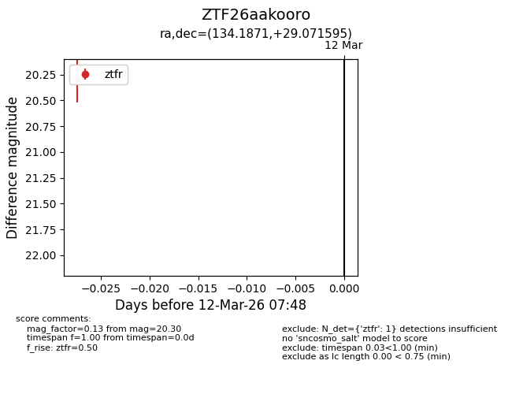
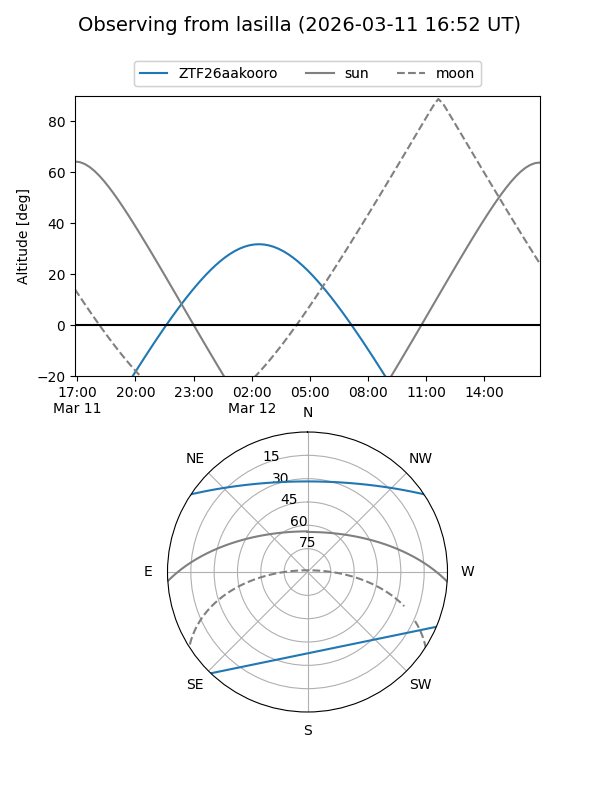
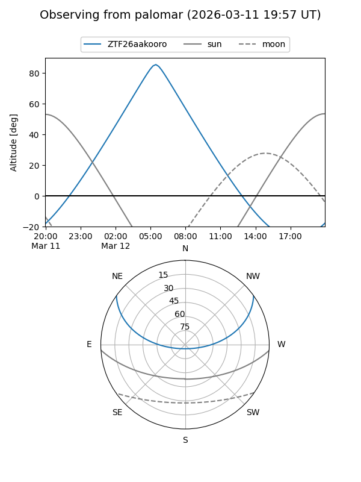

ZTF26aakooro
Target ZTF26aakooro at 2026-03-12 07:50
Aliases and brokers:
FINK: link
Lasair: link
ALeRCE: link
alt names
ZTF26aakooro (ztf,fink_ztf)
Coordinates:
equatorial (ra, dec) = 134.1871,+29.07159
equatorial (HMS+DMS) = 08:56:44.91,+29:04:17.74
galactic (l, b) = (196.1441,+38.75547)
Flags:
Photometry:
last ztfr=20.30
1 ztfr detections
Lightcurve

Visibility


Additional plots